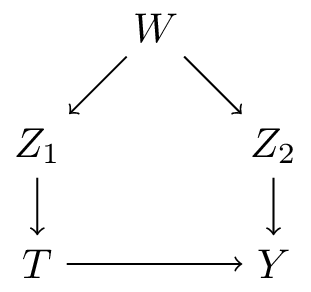
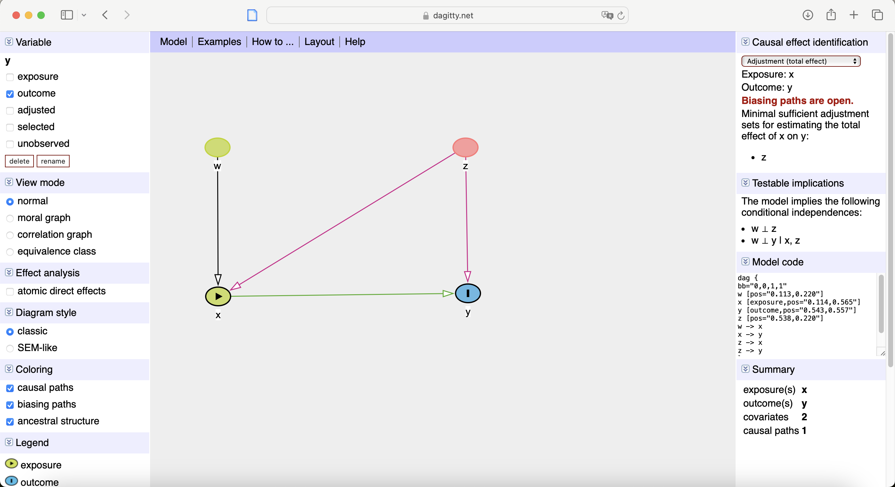
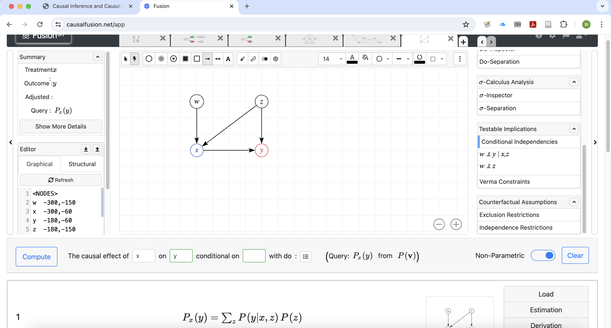
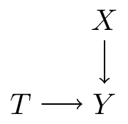

Adjustment Sets and Approaches - and limitations / critiques
2024-08-06
Adjustment sets and approaches
How to find adjustment sets?
- adjustment sets:
- the back-door criterion states that any set \(Z\) that blocks all backdoor paths from \(X\) to \(Y\) is a sufficient adjustment set for causal effect estimation of \(P(Y|\text{do}(X))\) using the backdoor formula.
- how do we find these sufficient sets?
- what if there are multiple?
- adjustment: how to do this?
- stratification
- what is regression adjustment?
- T-learner vs S-learner
Valid adjustment sets

- in general:
- \(PA_T\) (the direct parents of treatment \(T\): \(Z_1\)) are a valid adjustment set
- \(PA_Y\) (the direct parents of outcome \(Y\): \(Z_2\)) are a valid adjustment set
- in this case:
- \(W\) is also a valid adjustment set
Valid adjustment sets: picking one
- websites like dagitty.net and causalfusion.net provide user-friendly interfaces for creating and exporting DAGs, in addition:
- valid adjustment sets (if they exist)
- testable conditional independencies


How to do adjustment
What not to do
- do univariable pre-screening against outcome (and / or treatment)
- this should maybe never be done
- especially not in the context of causal inference
Adjustment formula
\[P(y|\text{do}(x)) = \sum_z P(y|x,z)P(z)\]
- entails summing over all possible values of \(Z\)
- say \(Z\) is 5 categorical variables with each 3 categories, this means \(4^5=1024\) estimates of:
- \(P(y|x,z)\) for each value of \(x\)
- what if \(Z\) is continuous?
- in practice, researchers rely on smoothness assumptions (e.g. regression) to estimate \(P(Y|x,z)\) with a parametric model
- this assumption can be based on substantive causal knowledge, but often seems inspired rather pragmatism or necessity
- misspecification of this estimator leads to biased results (even if you know all the confounders)
Target queries
- up to now we’ve worked exclusively with \(P(y|\text{do}(t))\): the probability of observing outcome \(y\) when setting treatment \(T\) to \(t\)
- this is not typically what is of most interest, say there are two treatment options \(T \in \{0,1\}\) (control and ‘treatment’)
- average treatment effect \[\text{ATE} = E[y|\text{do}(t=1)] - E[y|\text{do}(t=0)]\]
- conditional average treatment effect \[\text{CATE} = E[y|\text{do}(t=1),w] - E[y|\text{do}(t=0),w]\]
- prediction-under-intervention \(P(y|\text{do}(t),w)\) (more on this on day 4)
- these can be computed from \(P(y|\text{do}(t),w)\)
The simplest case: linear regression
assume the following structural causal model (\(z\) is confounder, \(u\) is exogenous noise): \[f_y(t,z,u) = \beta_t t + \beta_z z + \beta_u u\]
then: \[\begin{align} \text{ATE} &= E[Y|\text{do}(t=1)] - E[Y|\text{do}(t=0)] \\ &\class{fragment}{= E_{z,u}[\beta_t * 1+ \beta_z z + \beta_u u] - E_{z,u}[\beta_t * 0 + \beta_z z + \beta_u u]} \\ &\class{fragment}{= \beta_t + E_{z,u}[\beta_z z + \beta_u u] - E_{z,u}[\beta_z z + \beta_u u]} \\ &\class{fragment}{= \beta_t} \end{align}\]
i.e. the ATE collapses to the the regression parameter \(\beta_t\) in a linear regression model of \(y\) on \(t,z\)
General estimators for the ATE and the CATE (meta-learners)
- denote \(\tau(w) = E[y|\text{do}(t=1),w] - E[y|\text{do}(t=0),w]\)
- (assuming \(W\) is a sufficient set)
- T-learner: model \(T=0\) and \(T=1\) separately (e.g. regression separetely for treated and untreated): \[\begin{align} \mu_0(w) &= E[Y|\text{do}(T=0),W=w] \\ \mu_1(w) &= E[Y|\text{do}(T=1),W=w] \\ \tau(w) &= \mu_1(w) - \mu_0(w) \end{align}\]
- S-learner: use \(T\) as just another feature \[\begin{align} \mu(t,w) &= E[Y|T=t,W=w] \\ \tau(w) &= \mu(1,w) - \mu(0,w) \end{align}\]
- (many other variants combinations: this is a whole literature)
Intuitive way-pointers:
- where does the complexity come from?
- variance in outcome under control: \(E[y|\text{do}(T=0),w]\)
- variance CATE: \(\tau(w)\) (in statistics: interaction between treatment and covariate)
Where does the variance come from?

- \(Y = T + 0.5 (X - \pi) + \epsilon\) (linear)
- \(Y = T + \sin(X) + \epsilon\) (non-linear additive)
- \(Y = T * \sin(X) - (1-T) \sin(x) + \epsilon\) (non-linear + interaction)
Limitations of DAGs and SCMs
Making DAGs
- how do you get a DAG? up to now we assumed we had one
- based on prior evidence, expert knowledge
- “no causes in, no causes out”
A003024: The death of DAGs?
The number of possible DAGs grows super-exponentially in the number of nodes
| n_nodes | n_dags | time at 1 sec / DAG |
|---|---|---|
| 1 | 1 | |
| 2 | 3 | |
| 3 | 25 | |
| 4 | 543 | |
| 5 | 29281 | > an hour |
| 6 | 3781503 | > a day |
| 7 | 1138779265 | > a year |
| 8 | 783702329343 | |
| 9 | 1213442454842881 | > human species |
| 10 | 4175098976430598143 | > age of universe |
Do we need to consider all DAGs?
- a single sufficient set suffices
- adjusting for all direct causes of the treatment or all direct causes of the outcome are always sufficent sets
- can we judge these without specifying all covariate-covariate relationships?
- potential approach:
- put all potential confounders in a cluster (e.g Anand et al. 2023)
- ignore covariate-covariate relationships in that cluster
- what happens when (partial) missing data?
SCM vs potential outcomes
- definition of causal effect
- PO: averages of individual potential outcomes
- SCM: submodel or mutilated DAG
- both require positivity
- d-separation implies conditional independence (exchangeability)
References

Wouter van Amsterdam — WvanAmsterdam — vanamsterdam.github.io